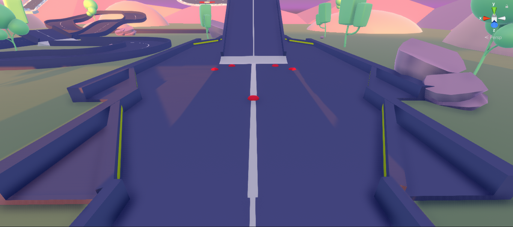
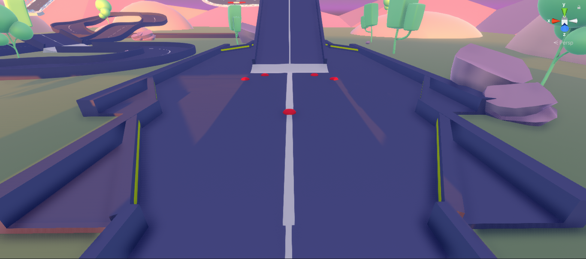

Caderno Digital
João Costa — Desenvolvimento de Jogos — IPMAIA 2021/22
Descrição de um jogo
Hollow Knight foi uma joia coberta de terra para mim. Há uns anos atrás, sem que tivesse ouvido quaisquer notícias sobre este jogo, um dia os meus canais de jogos e "lets-players" no Youtube apresentavam todos vídeos do Hollow Knight. De um dia para o outro, eu obtive imensa — até demasiada — informação acerca deste jogo. Sim, "demasiada informação" é a devida expressão a usar. Hollow Knight é o tipo de jogo que tem que se experienciar pessoalmente, não por vídeos na Internet.

Sendo um "metroidvania", o mundo do Hollow Knight é extenso e recheado de ambientes criativos e histórias interessantes. Os géneros principais incluem ação, aventura e "platforming". E, de facto, o jogo pronuncia-se perfeitamente em cada um e de forma equilibrada:
- Os inimigos são diversos e com caraterísticas que bem refletem o ambiente onde se encontram. O Knight apresenta um conjunto de ataques limitado, mas que se vai expandindo e melhorando ao longo do jogo. Isto fornece ao jogador o tempo necessário para dominar os controlos básicos e adaptar-se aos inimigos mais fáceis, oferecendo depois novas habilidades e desafios com o seu progresso pelo jogo;
- A história do mundo é desvendada pela exploração do jogador e pelas conversas com as personagens peculiares. Apesar de não ser essencial para o progresso do jogo, a existência destas informações estabelece uma autenticidade ao mundo e incentiva a exploração dos jogadores interessados;
- Os desafios de "platforming" são semelhantes ao combate, limitando-se pelo conjunto inicial de movimentos do jogador e aumentando a dificuldade quando se obtém mais habilidades. Os desafios mais difíceis requerem o uso sequencial e repetido dos diferentes movimentos obtidos, incluindo um clássico duplo salto e um salto baseado nos ataques normais da espada do Knight sobre inimigos e obstáculos.
O mundo do Hollow Knight consiste de um reino decaído, ocupado por diferentes espécies de insetos. A personagem do jogador — simplesmente conhecido como o Knight — entra no reino por terras selvagens. Deparando-se com vários outros insetos ao longo do jogo, o Knight aprende que o reino caiu devido a uma infeção que rouba a inteligência dos insetos, controlando-os através dos seus instintos mais básicos. O rei destes insetos, o qual está desaparecido, terá solicitado o auxílio de um dos seus soldados — o Hollow Knight — para derrotar e conter a fonte da infeção. No entanto, esta solução não resolveu o problema. E agora, a infeção ameaça libertar-se do Hollow Knight e controlar os insetos do reino outra vez.
Claro que isto não seria uma análise do Hollow Knight se não mencionasse as artes. O design das personagens e dos ambientes apresenta cada um de uma forma única. Praticamente todas as personagens são memoráveis não só pelo seu papel no jogo, mas também pela sua forma e pelo seu estilo, os quais refletem imensamente bem as suas caraterísticas e peculiaridades — por vezes, de forma cómica. Os ambientes contêm paletas de cores variadas e, quase sempre, de cores vivas, estando os níveis recheados de objetos cenográficos que, sendo por vezes simplistas, ainda caracterizam imenso o mundo. Por sua vez, a banda sonora não é feita de simples músicas — são autênticas sinfonias. Esta é, de longe, uma das melhores bandas sonoras que já alguma vez ouvi num jogo. Cada ambiente e "boss" pode ser facilmente identificado apenas pela sua melodia, pois a banda sonora foi um outro instrumento usado na realização do mundo do Hollow Knight, apresentando uma qualidade deveras magnífica.
Unity: Tutorial de Karts
Unity: Tutorial de First Person Shooters
Unity: Tutorial de 2D Platformers
Nestas aulas, o projeto usado não se encontrava na secção "Learn" do Unity Hub. Em vez disso, tive que criar um novo projeto, na secção: "Projects" → "New".
O primeiro passo do tutorial foi a experimentação do jogo. Este aparenta ser bastante simples: o jogador apenas consegue mover a personagem principal e fazê-la saltar; os inimigos são umas gomas que rastejam no chão e que podem ser derrotadas com um salto nas suas cabeças; o jogador perde o jogo se levar qualquer tipo de dano, quer pelos inimigos, quer por cair fora do nível.
A primeira alteração que eu fiz foi a adição de um tronco de uma árvore (localizado em "Mod Assets" → "2D Props"). Para que este objeto colidisse com o jogador, adicionou-se um componente "Box Collider" ao tronco. No entanto, este não funcionou, pois o Unity diferencia entre os "colliders" 3D e os 2D. Como tal, troquei os componentes e ajustei o tamanho da caixa, para corrigir a distância de colisão entre o jogador e o tronco. O jogador era agora impedido de andar através do tronco e podia saltar para cima dele.
Trabalho Prático 1
Como o objetivo deste trabalho consiste na criação de um novo nível, considerei utilizar o "GameKit" que proporcionasse a maior facilidade na construção de novas partes da cena, mantendo um nível adequado de versatilidade. Por essas razões, para a realização deste trabalho prático, o "GameKit" escolhido foi o Karting Microgame.
Ideias iniciais para o Karting Microgame:
- Caminhos da pista divididos, preferencialmente com diferentes graus de dificuldade;
- Saltos com rampas/precipícios;
- Pontes;
- Loops;
- Melhorar o sistema de "checkpoints": "checkpoints" ordenados, o jogador só pode acabar a corrida na meta, etc.;
- Implementação de um salto controlado pelo jogador.
O início do desenvolvimento começou pelo fim da pista e pelas primeiras ideias que tive para este projeto. Eu queria que a pista começasse de maneira simples, pelo que a divisão dos caminhos foi reservada para o fim da pista. Para criar uma diferença de dificuldade entra os novos caminhos, iriam-se usar segmentos de pista inclinados, no sentido de desorientar o jogador ligeiramente.
Começou-se por criar uma rampa que guiasse o jogador para o caminho elevado, o qual seria mais curto, mas difícil. Para tal, alargaram-se os segmentos originais do "GameKit" de uma forma brusca e crude, através do simples aumento das suas escalas axiais. Depois, adicionaram-se uns segmentos de pista pré-fabricados, com inclinações de 30°. Para se voltar a nivelar a pista, usou-se um outro segmento inclinado no fim, mas com a escala de um dos seus eixos invertida.


A saída da pista elevada tirou partido da minha segunda ideia para este projeto: um precipício. Em vez de criar uma outra rampa tão perto do final do circuito, decidi que seria mais fácil e mais divertido ter um pequeno salto para se sair da pista elevada. As faixas desta pista provaram-se difíceis de se apontar para a faixa no chão. Para se contornar este problema de uma forma subtil, usou-se o truque da alteração da escala axial de uma curva.
 do caminho elevado para a pista no chão")
Sendo que eu não gostei da maneira como tinha criado a divisão dos caminhos, achei melhor resolver o aspeto desta parte. No entanto, não conhecendo uma melhor forma de aumentar os segmentos de pista suavemente, decidi seguir a minha segunda ideia: criar um "prefab" de uma guarda que possa não só esconder o mau aspeto da faixa ao jogador, como também impedir que este saia da pista pelos buracos.


Eventualmente, notei que as curvas podiam ser usadas para alterar a largura dos seguintes segmentos da pista com uma transição natural. Aumentando ou diminuindo a escala de uma das dimensões do segmento curvo, a entrada/saída desta faixa pode ser redimensionada sem que a outra extremidade sofra alterações. Com este conhecimento, decidi criar o início da pista com uma secção oval com segmentos mais largos, oferecendo mais espaço para o jogador poder usar grande risco de bater nos lados da pista.
Depois da oval estar criada, adicionei uns segmentos turbulentos e liguei a pista com as espirais que já existiam no nível do "GameKit". Entre as espirais, decidi tirar partido dos segmentos com desvio lateral, os quais correm à volta de um edifício.


Com a adição dos edifícios entre as espirais, decidi colocar mais alguns no nível, como decoração.


Após conectar as espirais com a divisão dos caminhos, comecei a preencher o caminho inferior. Esta parte da pista teria que ser mais longa que o caminho inferior, mas com uma menor dificuldade.
Comecei com uma volta a um monte. Para evitar que esta pista comece demasiado fácil, construí uma pista que subisse de nível em passos, no sentido de forçar o jogador a regular a maneira como controla o carro ao longo da argola. Após a volta ao monte, a pista continua para uma rampa íngreme que deverá reduzir a velocidade do jogador, seguida de uma curva inclinada apertada. Finalmente, o caminho inferior acaba com um salto por cima dos segmentos de pista entre a volta ao monte e a rampa íngreme. Desta maneira, caso o jogador não consiga realizar o salto, ele será forçado a subir a rampa, passar a curva inclinada e tentar o salto outra vez.

Com a pista conectada do início ao fim, decidi seguir um dos conselhos do professor de juntar obstáculos ao nível, começando pela criação de um "prefab" para uma simples torre sinalizada em branco e vermelho.
Comecei, então, a espalhar estes obstáculos pela pista: por baixo do edifício da pista oval, no interior da curva à saída da oval, entre as duas espirais e no final do caminho superior, de forma a assegurar a sua dificuldade. Note-se que, após encurtar o fim do caminho superior, adicionei uma torre a funcionar como lombada. Desta forma, o jogador deve manter uma velocidade decente e um bom ângulo de colisão para conseguir saltar até à meta.
Também me lembrei de usar as torres como lombadas em algumas partes do caminho inferior.


Por diversão, decidi criar um "power-up" que aumentasse a velocidade do carro. Comecei por alterar um "prefab" existente de uma esfera. Adicionei o componente "ArcadeKartPowerup.cs" ao "prefab" e aumentei os valores de aceleração e da velocidade máxima do carro. Para que o "script" funcionasse, ativou-se a opção "Is Trigger" do seu componente "Sphere Collider".
Decidi colocar o impulso de velocidade na pista oval, antes das torres. Isto iria dar ao jogador uma decisão a tomar: apanhar o "power-up" para aumentar a sua velocidade — arriscando-se a colidir com as torres — ou evitar o "power-up" para ter mais controlo sobre o carro — gastando mais tempo na pista oval.
Como o "power-up" era uma simples esfera colorida, não seria óbvio para o jogador que isto era um impulso de velocidade. Para resolver esse problema, criei um "prefab" de um cartaz, onde estaria indicado o uso destas esferas.

Após alguns testes na pista, apercebi-me que a pista oval talvez seja um bocado fácil demais. Eu precisava de algo que aumentasse ligeiramente a sua dificuldade, pelo menos para a segunda metade da oval. Para tal, criei uns "prefabs" de saliências que eram, essencialmente, esferas achatadas. Especificamente, criei duas: uma (amarela) mais achatada que a outra (vermelha), para que tenham graus de perigo diferentes.

 

Depois de mais testes à pista, era óbvio que as saliências na pista oval eram demasiado difíceis para o início da pista, pois, juntamente com o impulso de velocidade, elas eram capazes de mandar o carro para fora da pista. Então, adicionei umas guardas laterais, para tentar impedir que o jogador possa perder a corrida nesta secção.
Com novos obstáculos no projeto, decidi que era uma boa altura para terminar o caminho superior com a adição de mais obstáculos. Também optei por adicionar um impulso de velocidade no início, o qual é praticamente obrigatório de se usar, pois encontra-se entre duas torres. O aumento de velocidade serve para diminuir o controlo sobre o carro. Com esta combinação de obstáculos e "power-up", o caminho superior era agora capaz de ser tanto o circuito mais rápido, como o que oferece mais colisões antes da meta.


Para finalizar o nível, criei mais alguns cartazes para o decorar.


Com o projeto concluído, termino este relatório com um mapa do nível final.

Trabalho Prático 2 — Toss A Cherry To Your Bard
Este trabalho de grupo consistiu da criação de um pequeno jogo. Os membros do nosso grupo incluiram:
- João Costa — A033587
- Filipe Silva — A034190
Sendo que ambos os membros do grupo queriam experimentar o motor de jogo Godot, optou-se por criar um jogo com um único nível mais extenso, do que um jogo com vários níveis pequenos.
Tópicos:
- Explicar os básicos do Godot
- Comecei pela física do jogador
- Filis adicionou alguns assets do Godot Marketplace (dialogueBox, sample sounds, sprites) REMEMBER to give credit!
- Filis criou a maior parte do nível do jogo
- Branch de melhorias ao jogador e da adição dos WallSlidingDetectors (falar do bug entre Tilemaps e Area2D com monitorable falso)
- Branch de adição de música
- Branch de bloqueamento do céu no background
- Branch (apagado, thanks Filis...) de animações do jogador e de ajdustments
- Revamp do wall-sliding e wall-jumping
- Branch do TimerUI
- Branch do ajuste automático do céu no background
- Branch das Cherrys e ScoreUI
- Branch StartSign e EndSign
- Branch do StartScreen, StartScreenUI e EndScreenUI
- Branches do player death, level timeout e cliff fall
- Branch do wall-sliding fix em tiles de tilemaps diferentes
- Fix layer order (player must go behind fake walls)
- Setup game for release (game title, 20min level timer)
- Branch das rope sprites
- Branch dos player adjustments e dust clouds
- ACTUALLY hidden wall fix layering
- Last minute configs and additions
- Bónus aditions after first delivery
Recursos
Recursos do Godot Marketplace
Para o desenvolvimento do jogo, alguns dos recursos usados teriam que ser criados pelos alunos. No entanto, isto não nos daria tempo suficiente para criar um jogo até à data de entrega, mesmo que o jogo seja pequeno. Portanto, tirou-se partido dos seguintes recursos grátis do Godot Marketplace:
-
Pixel Starter Pack 1.0.0
https://godotmarketplace.com/shop/pixel-starter-pack/ -
44.1 General SFX Library (Free Sample) 1.0
https://godotmarketplace.com/shop/44-1-general-sfx-library-free-sample/ -
A Dialogue Box 0.2
https://godotmarketplace.com/shop/a-dialogue-box/ -
8 Bit 8 Pack 1.0
https://godotmarketplace.com/shop/8-bit-8-pack/ -
Open Font Package 1.0.1
https://godotmarketplace.com/shop/open-font-package/
Recursos Criados Pelos Alunos
Ainda no assunto de recursos externos, convém mencionar-se o website "jsfxr" [https://sfxr.me/], o qual foi usado para se criar os efeitos sonoros do salto do jogador e do texto do Dialogue Box. Para além desses recursos, inclui-se as sprites do jogador, criadas pelo Filipe, e as sprites das cordas decorativas, criadas por mim.
Física Do Jogador
Antes de ter começado este projeto, eu tinha testado o Godot ao criar alguns projetos mais pequenos. Um deles envolvia um jogador com as capacidades para andar, para saltar e para cair devido à força da gravidade.
O script usado nesse projeto possibilitava o movimento do jogador por aceleração, em vez de simplesmente se definir a velocidade imediatamente. Isto incluía a aceleração por fricção, para que o jogador tivesse alguma inércia. A velocidade do jogador é aumentada a cada frame, sendo, também, restringida a uma velocidade máxima pré-definida antes de ser aplicada ao jogador.
A condição para o jogador poder saltar é o seu state (estado),
o qual pode ser um de WALKING (jogador está em contacto com o chão)
ou FALLING (jogador está no ar).
O state do jogador também facilita a futura expansão das habilidades do jogador,
pois novas mecânicas que alteram a sua física podem ser implementadas
e encapsuladas dentro de um novo estado.